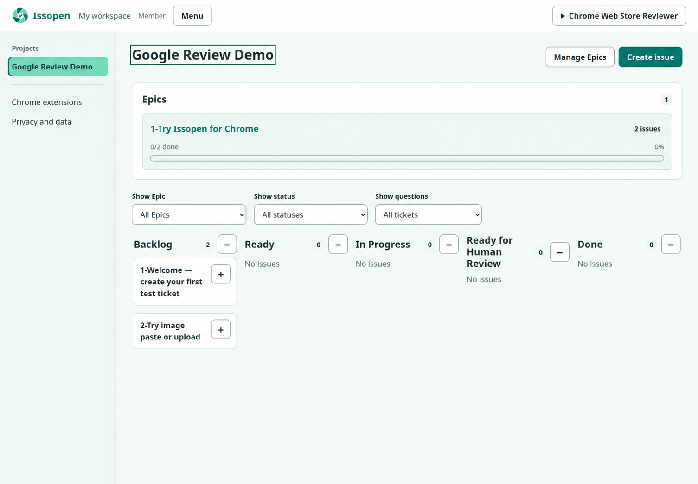
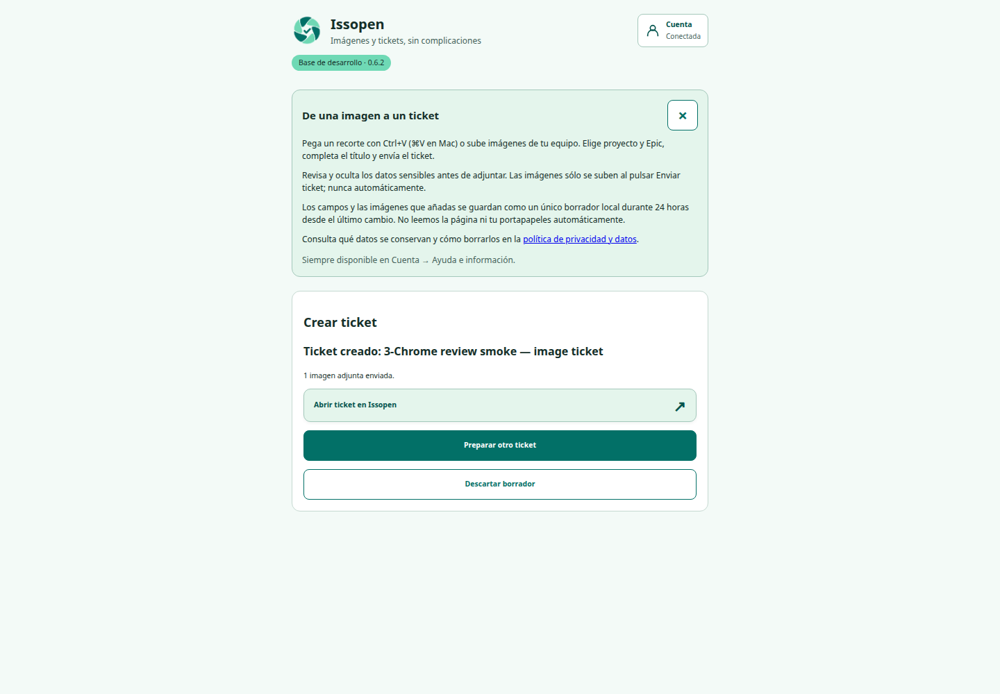

Context resets
Your agent forgets the plan when the session ends. You become the copy-and-paste layer.
The agent-native issue tracker
Give it an Epic. Issopen turns the plan into a shared queue, lets agents claim and complete work, pauses for your decisions and brings every result back for human review.
MCP-native · Human-reviewed · Self-hostable

One backlogNo more context scattered across chats.
Any MCP agentBring Codex, ChatGPT or your own client.
You stay in controlAgents execute. Humans make the call.
The chat trap
Every session starts with another explanation. Decisions vanish into scrollback. Two agents can unknowingly do the same work. When the answer arrives, nobody knows what was verified.
Your agent forgets the plan when the session ends. You become the copy-and-paste layer.
No shared queue, no ownership and no reliable answer to “what is the agent doing?”
One missing decision stalls the whole conversation instead of only the affected ticket.
You hunt through messages, branches and screenshots just to understand what changed.
The shift is already happening
The teams that move fastest will not be the ones with the longest prompts. They will be the ones whose agents wake up to a clear queue, know when to ask and return work that is ready to review.
From intent to reviewed code
Issopen turns autonomy into a visible loop you can trust.
You set the direction
Create an Epic, add the tickets you already know and answer the decisions that shape the work. The plan stays beside the execution instead of disappearing into a transcript.
Your agent runs the queue
Through MCP, the agent sees only the projects and actions you allowed. It claims one ticket, records progress, links code and keeps moving through independent work.
You keep the final say
When judgment is required, Issopen shows a warning, a focused question and the agent's recommendation. Completed work returns with the evidence you need to approve it.
Capture the moment it breaks
Product feedback loses energy every time someone says “I will write the ticket later.” The Issopen Chrome extension turns a screenshot into a structured issue while the context is still fresh.

Autonomy without surrender
Issopen gives an agent enough access to do useful work, not a master key to your workspace.
Decide which projects an identity can see and whether it may read, write, claim, create, review or close work. Change those permissions without rebuilding the integration.
Claims, comments, decisions, status changes and code links stay attributed and visible.
Require human review before Done. Agents deliver the evidence; your team decides.
Connect Codex, ChatGPT or another compatible client. Your backlog outlives any single chat, model or agent session.
Read the agent onboarding guideBuilt for the teams leaning forward
Keep the roadmap, decisions and agent output in one loop you can inspect at any time.
Capture what is wrong, attach the evidence and let the right human or agent pick it up.
Let agents handle bounded tasks while architecture and final review stay with your team.
Do not give your agent another blank chat
The opportunity is not using AI once. It is building a system where useful agent work can happen again tomorrow without starting over.
Questions worth asking
No. You bring the agent or MCP client you already use. Issopen coordinates work, permissions, decisions and review.
Only if you explicitly grant those capabilities. Agent identities are scoped by project and action, and their access can be reduced or revoked.
It can add a visible question with a recommendation and bounded options. You answer inside the ticket while independent work can continue elsewhere in the Epic.
Yes. It is a complete project, Epic and ticket workflow for humans. Agent collaboration is an additional teammate, not a requirement.
Yes, for uses permitted by the PolyForm Noncommercial License. Commercial use and managed deployments require a separate license.
The backlog is already waiting
Build the habit your team will wish it had started six months ago.
Open Issopen